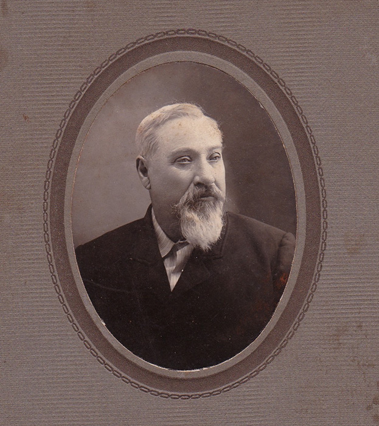
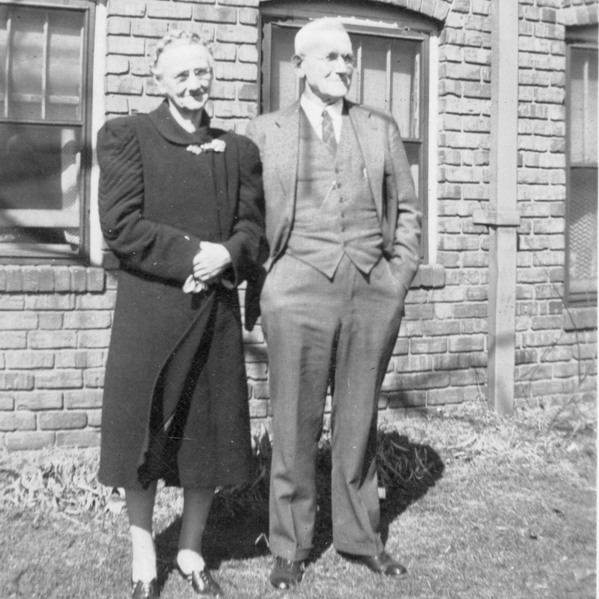
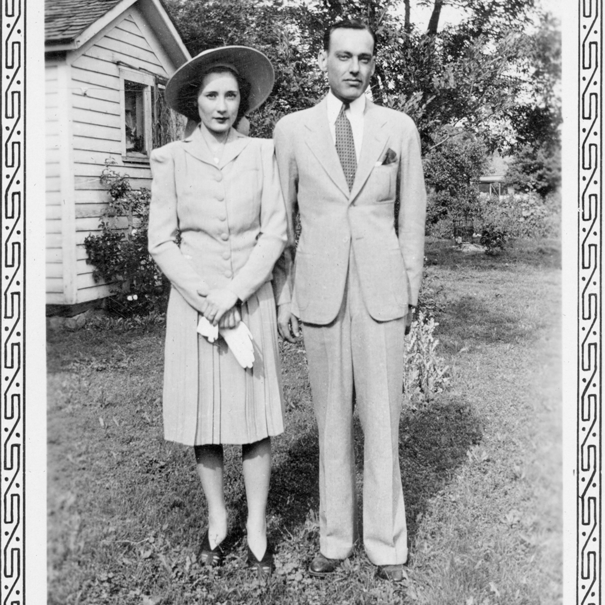

Our Story Begins Here
Go West Young Soldier — To Kansas
Walter J. Sutherland was born January 4, 1844, in Edmeston, New York. By the age of 16 his family had moved to Wheeling, Illinois, and at the age of 20 he answered his country's call and enlisted in Company B of the 132nd Illinois Infantry, mustered in at Camp Fry in Chicago on June 1, 1864.
He served as a Union soldier during the final year of the Civil War, stationed on garrison duty in Paducah, Kentucky, and may have participated in the July 27, 1864 skirmish at Haddix Ferry against Confederate guerrillas. Walter was honorably discharged on October 17, 1864, in Chicago.
Within two years of returning home, the young veteran headed west to Kansas, arriving in East Sheridan Township, Linn County around 1866, with his wife, Adaline (Blackman) and daughter Harriet. By 1869 he purchased a homestead near the Kansas-Missouri line and eventually became one of the prominent landowners of the Prescott community.
Walter and Adaline raised their family between their in-town home in Prescott and their farm in East Sheridan Township. Adaline passed May 30, 1889, and Walter passed on February 21, 1923.

The Story Continues
In the West at the Turn of the Century — Prescott, Kansas
Walter Mason Sutherland — known to family as WM or Mason — was born August 15, 1873, on the original East Sheridan Township homestead four miles east of Prescott, Kansas, the same land his father Walter J. had broken from prairie just a few years before. He married Maude Darling on December 25, 1899, in Fort Scott, Kansas, and the couple raised four children — Florence Adeline (Kite), Mildred (Thurman), William, and Carl Mason — all born on that same homestead.
Mason came of age working alongside his father on the Sutherland farms, and as a young man acquired one of his father's farm parcels of his own. When first married, he and Maude farmed near Fulton, Kansas, completing a barn on the property in 1908. In 1913 they moved to Fort Scott, where Mason worked at what his father described as a position in the car shops. Two years later they returned to the land, settling near Prescott for the rest of their lives.
Back in Prescott, Mason wore several hats. He continued farming but also served as postmaster of the Prescott post office and opened a general store in town — making him a fixture of community life in a way that echoed his father's prominence a generation earlier.
Mason and Maude spent their later years in a classic-style home at 2nd and Main in Prescott. That home was destroyed by fire in the 1990s. Maude passed away in 1959 at age 81, and Mason in 1961 at age 88. Both are buried in the Prescott Cemetery.

The 20th Century Marches On
Carl & Mary Jane — Where the Sutherland Story Finds Its Home
Carl Mason Sutherland was born January 18, 1912, on the family farm just east of the Kansas/Missouri state line in Sheridan Township, four miles east of Prescott, Kansas. Growing up he worked alongside his father on the farm and attended Indian Creek country school, one mile east and a half mile south of home. He entered the first freshman class of the new Prescott Rural High School in 1925.
After high school graduation, Carl took the train to Fort Scott to attend Fort Scott Junior College. Following his time there, he went on to the University of Missouri at Columbia, where he worked in the student union dining room, joined a fraternity, and earned a degree in Business in 1932. He began as a social worker in Kansas City, Missouri — working with people in difficult circumstances and, in summer, sleeping in the parks at night to escape the heat of the apartments.
That chapter closed when General Motors hired him as an automobile sales representative covering southeast Missouri, northwest Arkansas, and northeast Oklahoma. It was during this time in southern Missouri that he met Mary Jane Harryman, five years his junior, born September 21, 1918, on a country farm south and west of Anderson, Missouri, where the Elk River ran through a beautiful valley of murderous rocky roads. After high school Mary Jane had moved to San Diego to live with her older sister — until Carl traveled west by train with his parents and sister Mildred to bring her back to Kansas.
Carl and Mary Jane were married June 2, 1940, in the backyard of Mason's home in Prescott. During World War II the family lived in Pittsburg, Kansas, where Carl supervised the Parsons ordnance plant. Afterward they returned to Prescott, settling near Mason and Maude, and Carl established a cold storage locker, meat smoking, and grocery operation in a building his father owned in town.
In 1951 Carl and Mary Jane purchased approximately 120 acres on the west side of Prescott. The family moved into a big white house with a wraparound front porch in 1956. From that farm they raised row crops, milk cows, chickens, and pigs. The two-story barn, constructed in 1911, still stands visible from US-69 at the Prescott exit. The house, rebuilt after a fire in 1912, was struck by lightning in 2009 and stripped to the studs and rebuilt once more.
This farm, acquired by John Sutherland after Carl and Mary Jane's passing, is now known as High Linn Farms.
